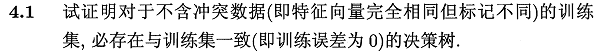
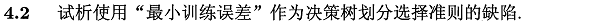
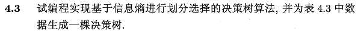
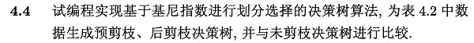
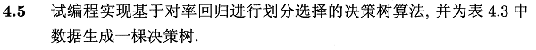
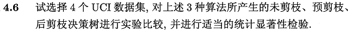
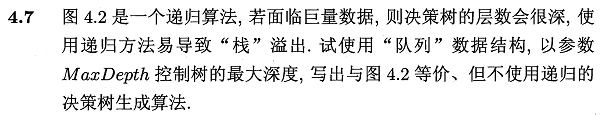
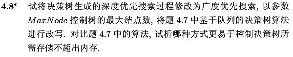

本章所涉及编程练习采用Python-sklearn的方式，环境搭建可参考 数据挖掘入门：Python开发环境搭建（eclipse-pydev模式）.
查看相关答案和源代码，欢迎访问我的Github：PY131/Machine-Learning_ZhouZhihua.
本章讲述决策树（decision tree），相关内容包括：
子决策（sub-decision）、递归生成算法（basic algorithm）、最优划分属性、纯度（purity）、信息熵（information entropy）、信息增益（information gain）、ID3 、增益率（gain ratio）、C4.5 、基尼指数（gini index）、CART；
过拟合、泛化能力、预剪枝（prepruning）（自上而下）、决策树桩（decision stump）、欠拟合、后剪枝（postpruning）（自下而上）、完全树。
连续属性离散化、二分法（bi-partition）、值缺失时属性划分、缺值样本划分、权重、加权信息增益；
斜划分、斜决策树（oblique decision tree）、非叶节点-线性分类器；
此外还提及了C4.5Rule、OC1、感知机树等拓展方法，以及增量学习算法ID4、ID5R、ITI等；
根据sklearn官网 - 1.10.Decision Trees总结如下：
优势（Advantages）：
劣势（Disadvantages）：

考虑决策树的生成（书p74图4.2），算法生成叶节点，并递归返回条件有：
由此可见，若两训练数据样本特征向量相同，那么它们会到达决策树的同一叶节点（只代表某一类），若二者数据标签不同（冲突数据），则会出现训练误差，决策树与训练集不一致。
如果没有冲突数据，到达某节点的样本会出现以下两种情况：
综上得证，当数据集不含冲突数据时，必存在与训练集一致（训练误差为0）的决策树。

由于训练集和真实集往往存在差异，若采用训练误差作为度量，模型常会出现过拟合，导致泛化能力差。

即ID3算法，这里我们基于Python独立编程实现。详细过程见：
周志华《机器学习》课后习题解答系列（五）：Ch4.3 - 编程实现ID3算法

即CART算法，这里我们基于Python独立编程实现。详细过程见：
周志华《机器学习》课后习题解答系列（五）：Ch4.4 - 编程实现CART算法与剪枝操作

这里提一下我的思路： 参考书p90-91的多变量决策树模型，这里我们将每个非叶节点作为一个对率回归分类器，输出为"是"、"否"两类，形成形如二叉树的决策树。

简要的分析一下：

下面主要是本题的一种视角：
首先做一些分析：
下面设计出基于队列+深度控制的决策树非递归生成算法：
----
输入: 训练集 D = {(x1,y1),(x2,y2),...,(xm,ym)}.
属性集 A = {a1, a2,...,ad}.
过程: 函数 TreeGenerate(D,A):
1. 生成根节点 root;
2. 初始化深度 depth = 0;
3. 生成栈 stack （为保存顶节点root及其对应的数据D和深度depth）;
4.
5. while D != Φ OR stack不为空:
6. if D != Φ, then
7. if D中样本全属于同一类别C, then
8. root标记为C类叶节点, D = Φ, continue;
9. end if
10. if depth == MaxDepth OR D中样本在属性A上取值相同, then
11. root标记为D取值中最多类的叶节点, D = Φ, continue;
12. end if
13. 从A中选择最优划分属性a*, 令Dv表示D中在a*上取值为a*v的样本子集;
14. 生成子节点 child, 为root建立分支指向child;
15. 将[root, D\{Dv}, A, depth]压入栈stack;
16. 令 root = child, D = Dv, A = A\{a*}, depth = depth+1;
17. else
18. 从stack中弹出[root, D, A, depth];
19. end if
输出: 树的根节点root.(即以root为根节点的树)
----
实际上，这里的算法实用的是栈而非完全意义上的队列。
个人认为，从数据结构的角度来看，栈和队列的最大区别在于FILO和FIFO，即存取元素时索引的区别，并不存在太大的存储实现区别。进一步说明，对于很多程序环境，如C++,Java等，均可以基于队列（Queue）构造栈（Stack）结构，由此构建的栈数据结构和队列底数据结构层实现相同。
题干中所说的栈“溢出”，主要应该是指递归时程序信息压栈所导致，相比于非递归的算法，其压栈数据量大得多。
故而此处的算法实现直接采用栈实现。
关于本题的另一种视角是：
对于深度优先搜索，采用队列存储每层当前节点的兄弟节点与父节点，这样队列的消耗相较于上面的一种方法要大一些（如当前节点的兄弟节点，父节点及其兄弟节点，祖父节点及其兄弟节点...）。

本题实际上是BFS与DFS的比较：
两种方法各自有防止队列过大化的阈值（即MaxDepth和MaxNode），所以两种方法均可将内存消耗控制在一定范围之内。
当数据属性相对较多，属性不同取值相对较少时，树会比较宽，此时深度优先所需内存较小，反之宽度优先较小。